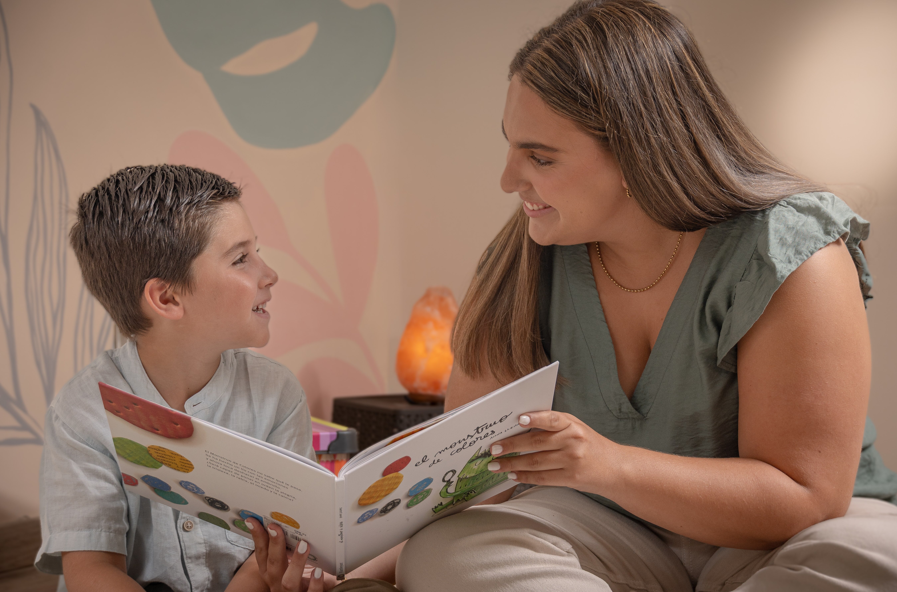
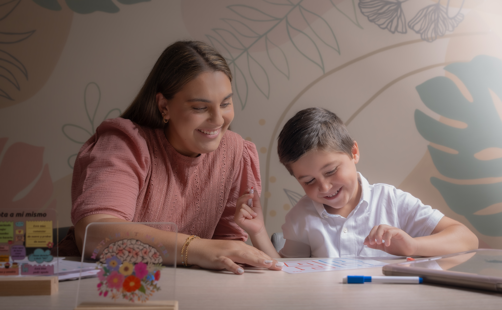
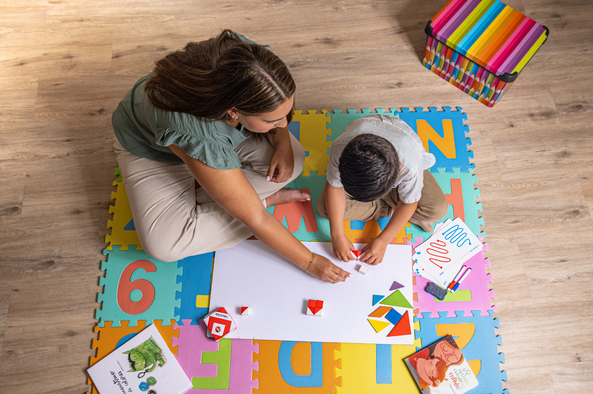
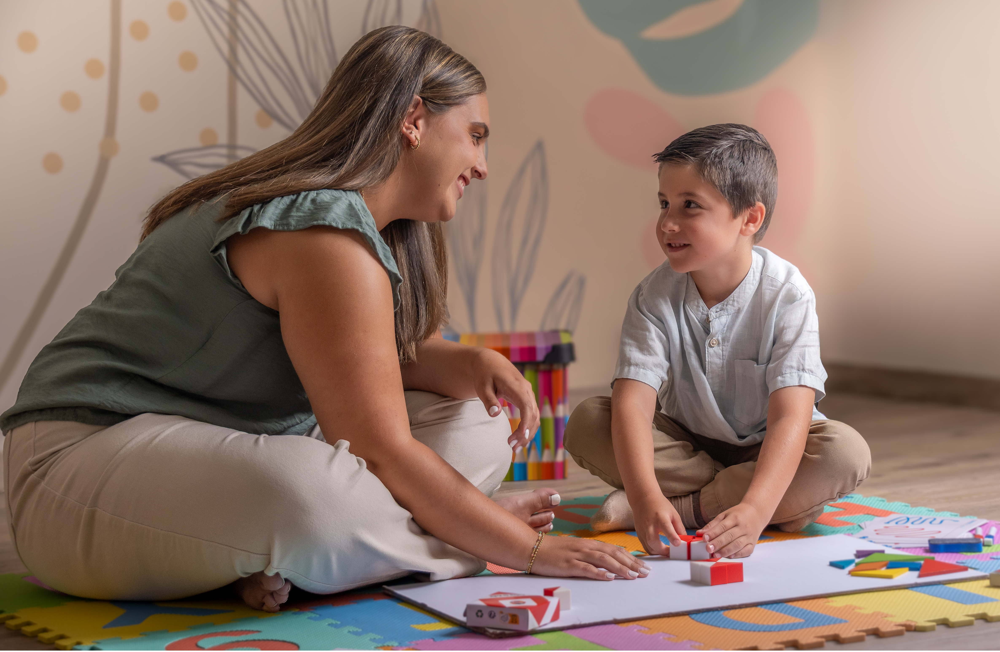

Mi Código: 14335
Formación académica:
Bachillerato y Licenciatura en Psicología – ULACIT
Másteres – ISEP, España:
Psicología Clínica Infantojuvenil
Psicoterapia Infantojuvenil
Intervención en Dificultades del Aprendizaje
Educación Especial
Psicopedagogía Terapéutica
Acompañamiento profesional para niños, adolescentes y familias, enfocado en el bienestar emocional, el desarrollo personal y el fortalecimiento del aprendizaje.
Se ofrece acompañamiento psicológico especializado, adaptado a cada etapa del desarrollo, con el objetivo de favorecer la identificación, expresión y regulación de las emociones en un entorno seguro y de confianza.
Espacio terapéutico para niños y adolescentes orientado al bienestar emocional, la gestión de emociones y el desarrollo personal.
→ Quiero información
Intervención psicopedagógica orientada a la identificación y abordaje de dificultades que interfieren en el rendimiento académico y el proceso de aprendizaje.
→ Quiero información
Intervención especializada en niños y adolescentes con necesidades educativas específicas y trastornos del neurodesarrollo.
→ Quiero información
Proceso de evaluación integral orientado a comprender el perfil cognitivo, emocional y académico del niño o adolescente.
→ Quiero información
Espacio de acompañamiento dirigido a padres y cuidadores, orientado a la comprensión y manejo de las necesidades del niño o adolescente.
→ Quiero información